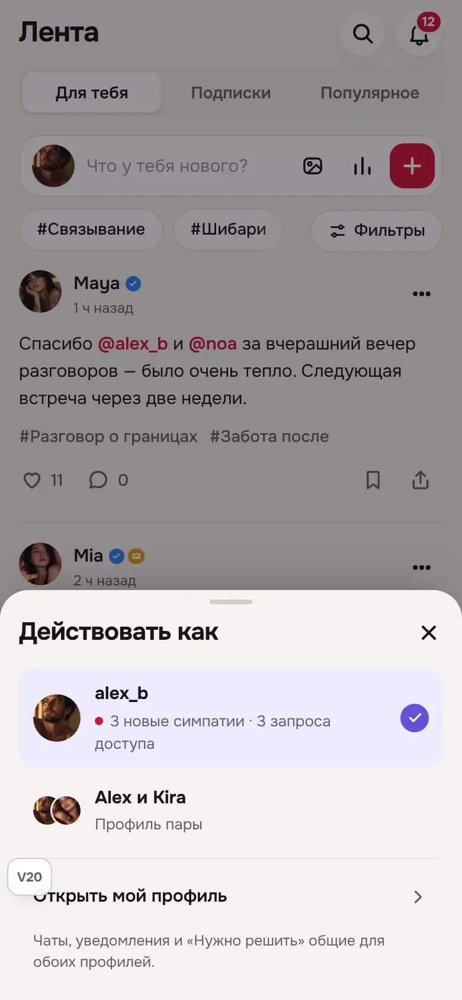
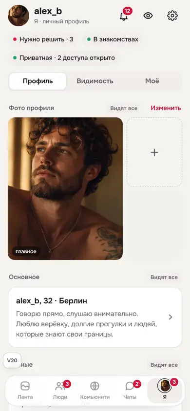
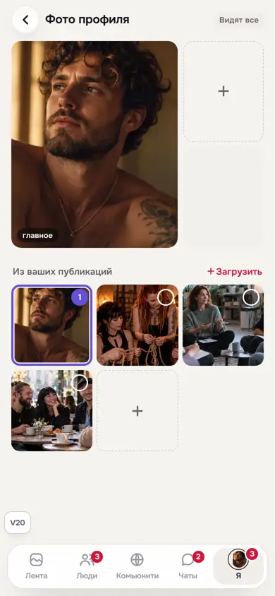
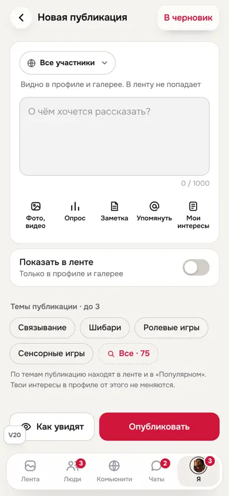
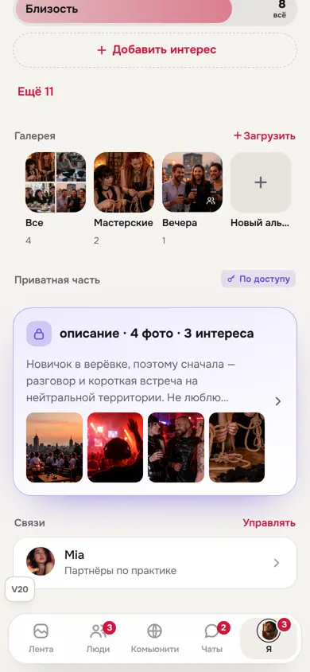
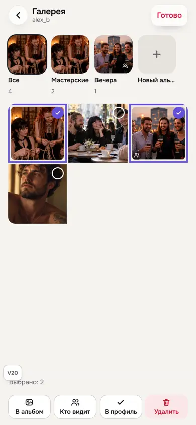
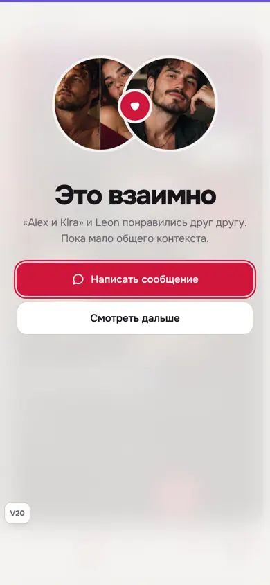
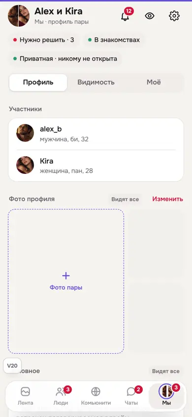
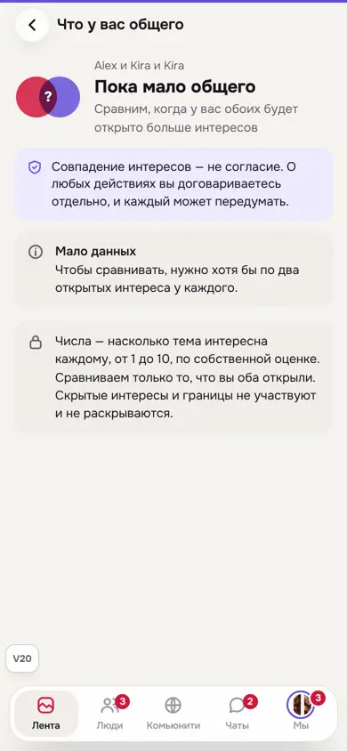
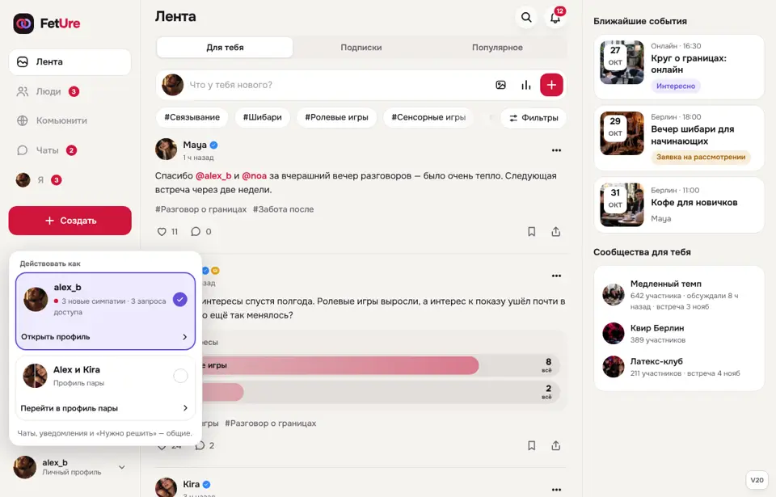

FetUre V20 — на решениях V19
V20 собрана заново на V19 в том виде, как её оставил владелец после #1270. Решения V19 сохранены, исправлено то, что было сделано криво: аватар в доке, выбор профиля, дубли и подсказки на «Я», смена «Я / Мы» не везде, неполный профиль пары.
Первая V20 (#1271) откатывала решения владельца из #1270 и заменена этой. Журнал — docs/design-reference/V20-CHANGELOG.md. Контракт — tests/prototype-v20-contract.mjs: правила V13, V14, V18, V19 (с #1270) и проверки V20.
Решения владельца
| Вопрос | Решение |
|---|---|
| Загрузка | Это публикация: несколько фото и видео, текст, аудитория. В ленту — по выбору («Показать в ленте»): из профиля и галереи выключено, из «Создать» включено. |
| Фото профиля | Выбираются из своих открытых публикаций. Можно до проверки — владелец видит метку «На проверке». Одно видео, не первым. |
| Аватар пары | Своё фото пары. Без него — один круг из двух половин, такого же размера, как у человека. |
| «Действовать как» | Две карточки, у каждой своё «Открыть профиль». |
| Док при вводе | Есть и в редакторах, и в чате, но прячется, пока открыта клавиатура. |
Что исправлено
- Аватар пары: один круг из двух половин той же высоты, что у человека, — и в доке, и на «Это взаимно», без квадратной рамки.
- Док: аватар 24 px, кольцо «Мы» с зазором, бейдж на углу.
- «Действовать как»: верх карточки переключает, низ — «Открыть профиль» / «Перейти в профиль пары». Выбранная — сиреневая с галочкой. Ожидание словами: «3 новые симпатии». На компьютере — окно у аватара в боковой панели.
- Смена «Я / Мы» везде: «Что у вас общего», страницы доступа и запросы с профиля идут от выбранного профиля. Открытые свои страницы (доступы, подписчики, галерея, «Как видят») сами переходят на выбранный профиль. Чаты и редакторы с несохранённым вводом сохраняют своего владельца.
- Без дублей: фото либо открытое, либо приватное, не оба сразу. «Все» в галерее — своя мозаика, а не обложка другого альбома. Под альбомами нет повтора тех же фото. «Ещё 11» вместо второго «Все · 19».
- Без висящих подсказок: убраны сноски под блоками «Я».
- Одинаковые «Я» и «Мы»: те же блоки в том же порядке. У пары в «Моё» появились «События пары» и «Сохранённое».
- Фото профиля: перетаскивание прямо на «Я» (и Alt + стрелки), нажатие — посмотреть, сделать главным, открыть публикацию, убрать. Редактор: места сверху и все открытые фото из публикаций — нажал, и фото встало на следующее место.
- Галерея: обложки альбомов на «Я», «Загрузить» открывает редактор публикации с выключенной лентой. В галерее — «Выбрать»: в альбом, кто видит, в профиль, удалить.
- Приватная часть: один блок со сводкой, в редакторе — описание и фото по доступу с «Загрузить».
Экраны










Проверено
- Контракт V20 с правилами V13, V14, V18 и V19 (с #1270) — проходит.
- Матрица: 3 персоны × RU/EN × 320/390/768/1440 × светлая/тёмная на 15 экранах (лента, выбор профиля, «Я», «Мы» с «Видимостью» и «Моё», редактор фото, галерея и режим выбора, загрузка, приватная часть, композер в «Мы», «Что у вас общего» в «Мы», «Как видят», чаты) — 528 состояний без ошибок JS и горизонтального скролла. 192 пропущены: у персон без пары нет режима «Мы».
- Длинный, «враждебный» и слитный текст на 320 и 390 px — 66 состояний, чисто (заодно исправлен перенос длинных слов в ленте).
Не сделано: связи у пары и личные настройки приватности (активность, упоминания, лайки) для пары — для них в прототипе нет данных. Не проверено: реальные устройства, перетаскивание долгим нажатием на телефоне, скринридеры, живая пара на двух клиентах.